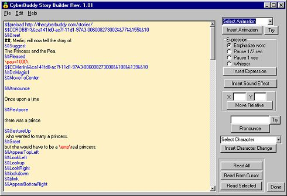

| ||||||||||||||||||
| ||||||||||||||||||
| CyberBuddy can read standard text and Web documents. But CyberBuddy can do much more when a document is written or converted to a format that is designed specifically for CyberBuddy. |
|  |
|
This tool can create documents to be read from a hard drive or from a website. When the document is saved with an extension of .cbb, Windows will recognize it as a CyberBuddy document and will "hand" the document to CyberBuddy to be read.
A CyberBuddy text document can be viewed or edited in something as simple as Windows Notepad. The format of the document is simply a text document with some "command tags" that direct the Activities of the Agent character. The CyberBuddy Story Builder simplifies the task of adding the command tags and gives a way to test the document as it is created. An example file is included with the program. Load this example to see how the program works. The Story Page has some stories created with the story builder.
|